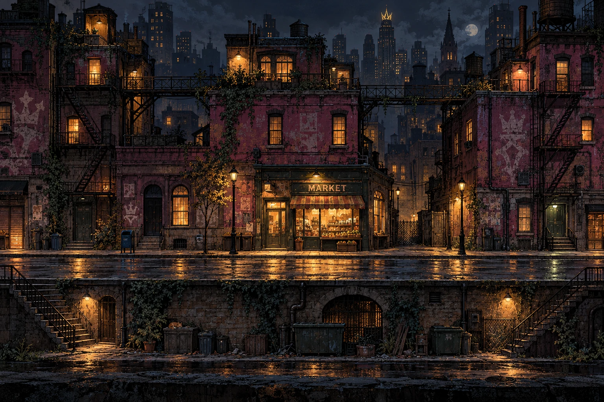

LAND 01 / CROWN CITY
Downtown Blitz.
Every crown starts on these streets.
THE FIRST STEPS01 / 20 CIRCUITS
01
STAGE ONEIntroduction
02
STAGE TWOThe Rival
03
STAGE THREEElite Challenge
STAGE FOURCircuit Boss

DOWNTOWN • AFTER DARK
THREE ROADS. YOUR CALL.Tap a path to explore
Your King leads. Your army follows.